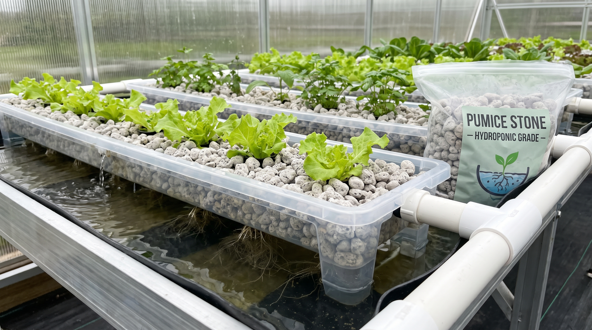
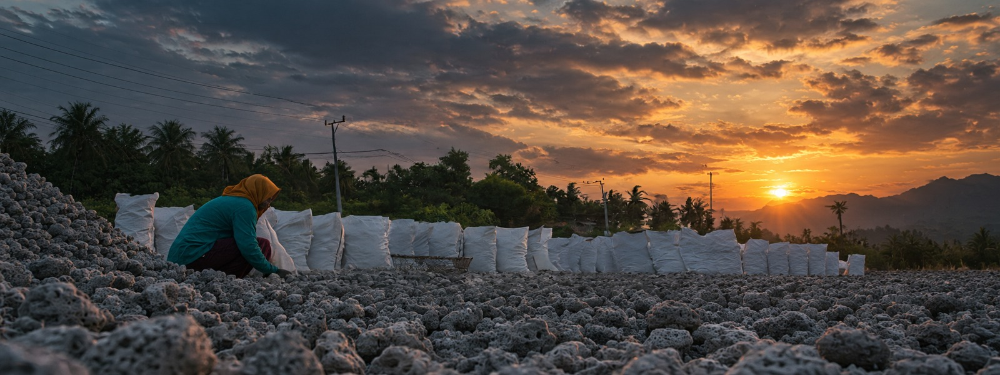
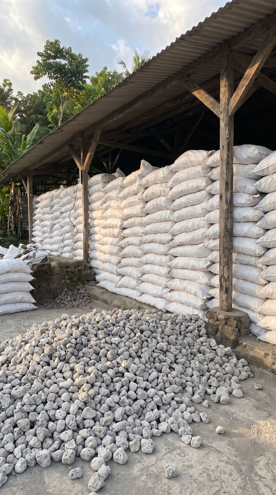
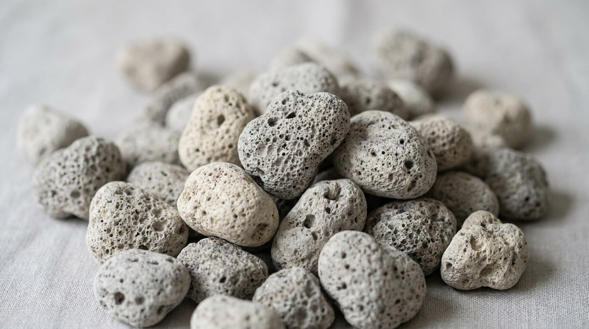
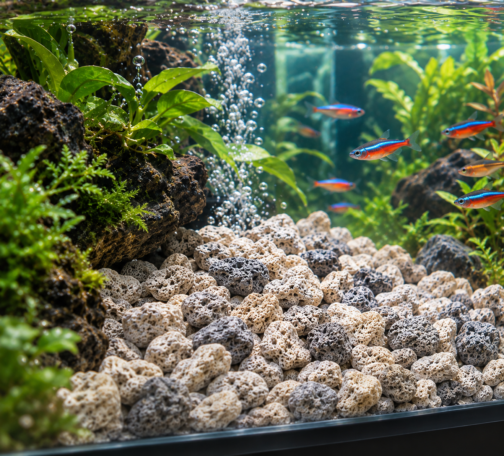
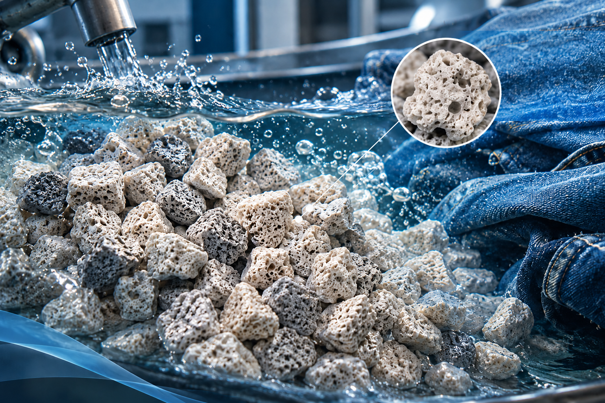
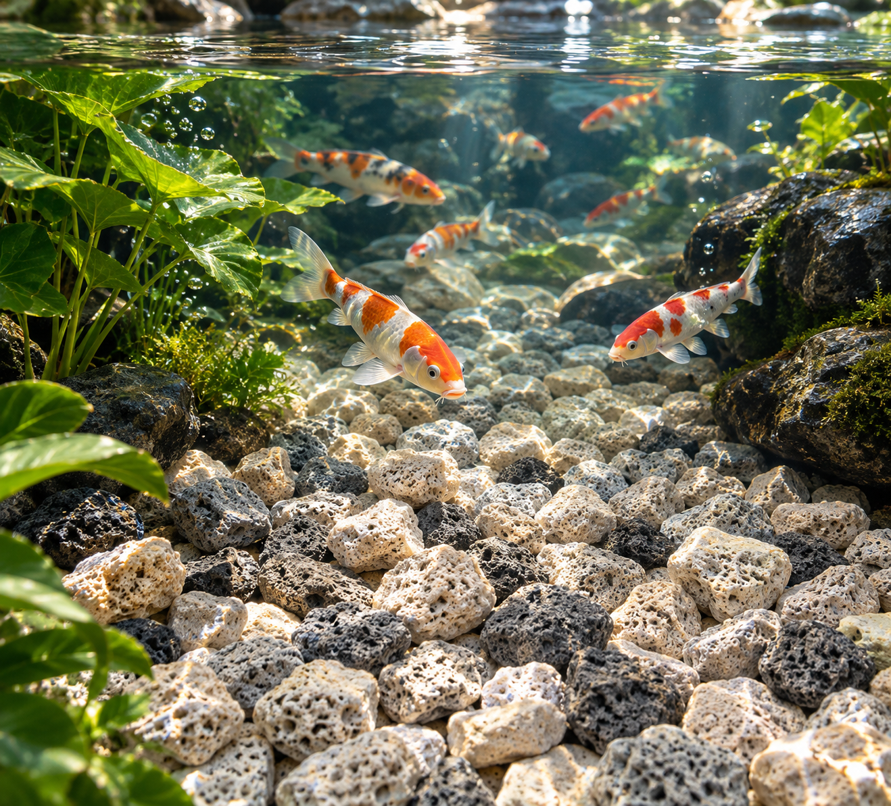
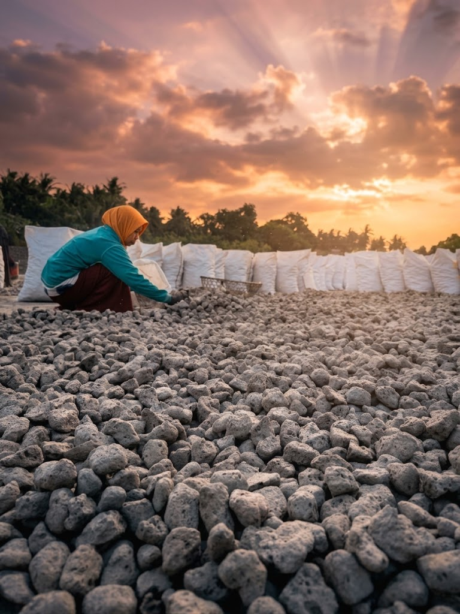

images/Hydroponic.jpgHydroponic Grade
Suitable for hydroponics and plant growing media.

Hero image slot · images/hero.jpgDirect from Lombok, Indonesia
Natural volcanic stone, carefully selected and prepared for international export.

Image slot · images/about.jpgAbout us
Kris Pumice Stone Indonesia is a direct supplier and producer of natural pumice stone from Lombok, Indonesia. We supply international buyers with natural volcanic stone that is carefully selected and prepared for export.
We are not simply a reseller. Direct sourcing and production give us closer control over product selection, processing, sizing and supply, so buyers know what to expect from one order to the next.
Sourced from Lombok, Indonesia.
Sorted by size and grade.
Bulk stock available for regular and large orders.
Packaging and shipping discussed to your requirements.
Product
Natural pumice stone in several sizes and grades. Custom specifications can be discussed according to buyer requirements.

Close-up slot · images/product-closeup.jpgProduct specification. Fields marked in brown are waiting for your data.
Five size ranges. Bars show relative stone size.
Each grade is selected and prepared for a specific type of use.

images/Hydroponic.jpgSuitable for hydroponics and plant growing media.

images/akwarium.pngSuitable for aquarium filtration and aquatic applications.

images/denim.pngSuitable for denim washing and textile applications.

images/grade-koi-pond.jpgSuitable for koi ponds and pond filtration systems.
Potential applications
Pumice stone is used across many industries. The areas below are potential applications. Please confirm suitability for your use with us.
Natural volcanic stone for garden and outdoor design.
Potential · to be confirmedGrowing media and plant substrates, including hydroponics.
Potential · to be confirmedFilter media for aquariums and ponds.
Potential · to be confirmedLightweight natural material for building-related uses.
Potential · to be confirmedNatural abrasive material for cleaning and polishing.
Potential · to be confirmedNatural stone for exfoliating and care products.
Potential · to be confirmedTechnical suitability depends on grade, size and your specification. Applications are discussed according to grade, size, and buyer requirements. Technical specifications can be provided upon request.
Quality
Consistent material comes from direct control over each stage, from the stone in Lombok to the container leaving port.
Natural pumice stone sourced directly in Lombok, Indonesia.
Material selected and sorted by size and grade.
Processed to the size and grade the buyer requires.
Checked against your specification before shipping. Checked against your agreed specifications before shipping.
Packed according to your requirements. Packed according to your agreed packaging requirements.
Shipping arrangements discussed with each buyer.

Landscape slot · images/volcanic-landscape.jpgWhy Indonesia, why our pumice
Pumice forms from volcanic activity, and Indonesia is one of the world's volcanic regions.
Lightweight stone with the open, porous structure pumice is known for.
Sorted by size and grade from our own sourcing and production.
Clear communication on specifications, packaging and shipping.
Export and partnership
We supply local and international buyers. Bulk stock is available for regular and larger-volume orders.
Routes are illustrative. Destination markets are not implied.
Selected by size and grade.
Prepared to your requirements.
Shipping arranged with the buyer.
Delivered where you need it.
Tell us your grade, size, volume and destination. We will reply with availability and next steps.
Contact
Send us your requirements for specifications, availability, bulk orders, pricing and export.
Reliable material. Clear communication. Global partnership.